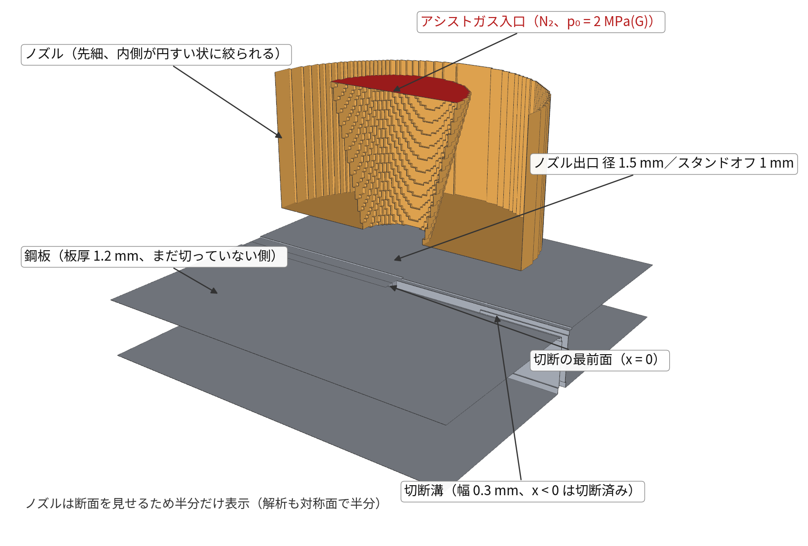
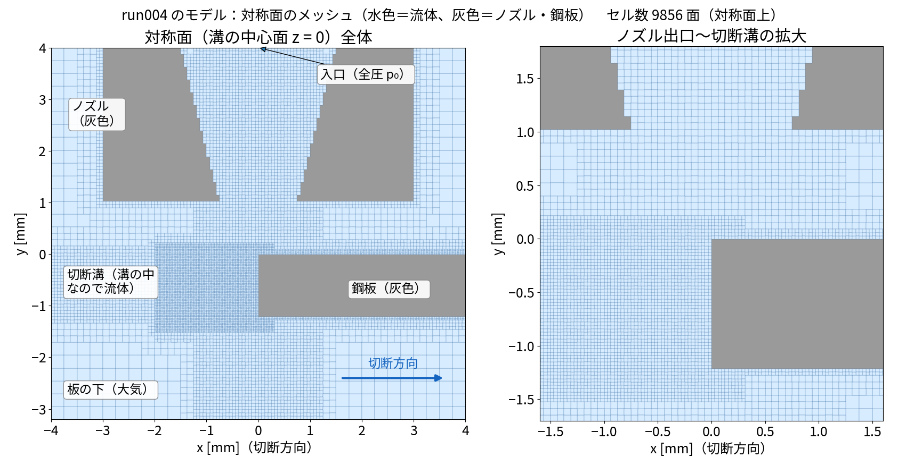
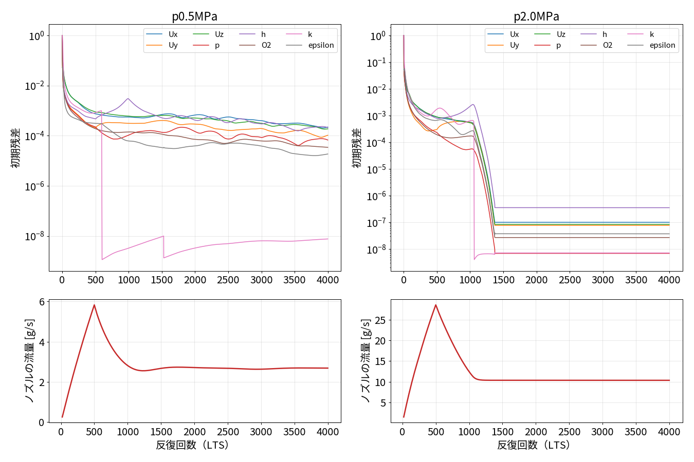
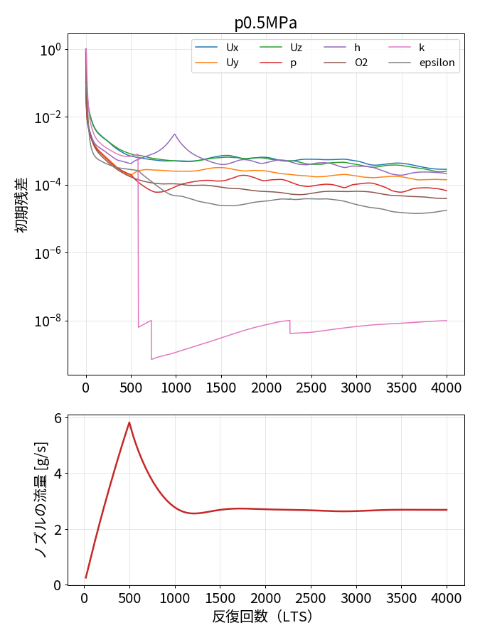
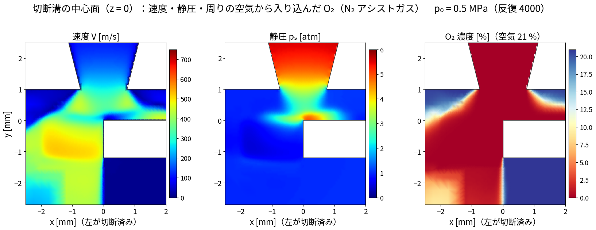
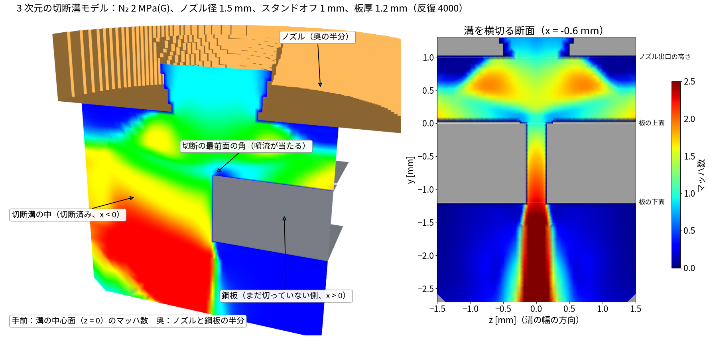
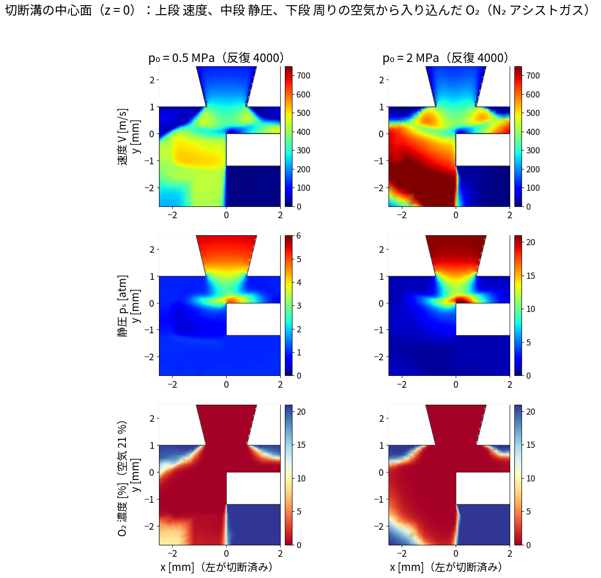
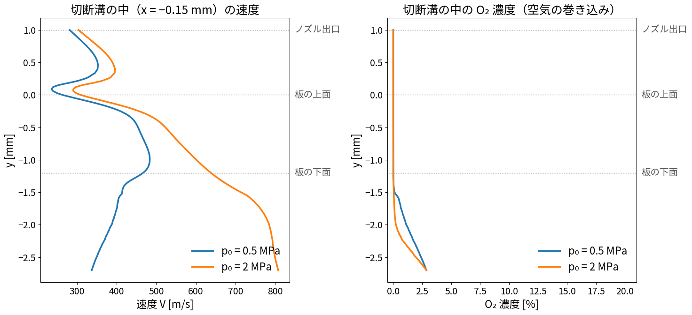
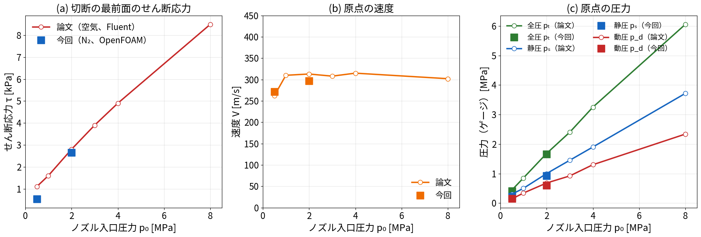
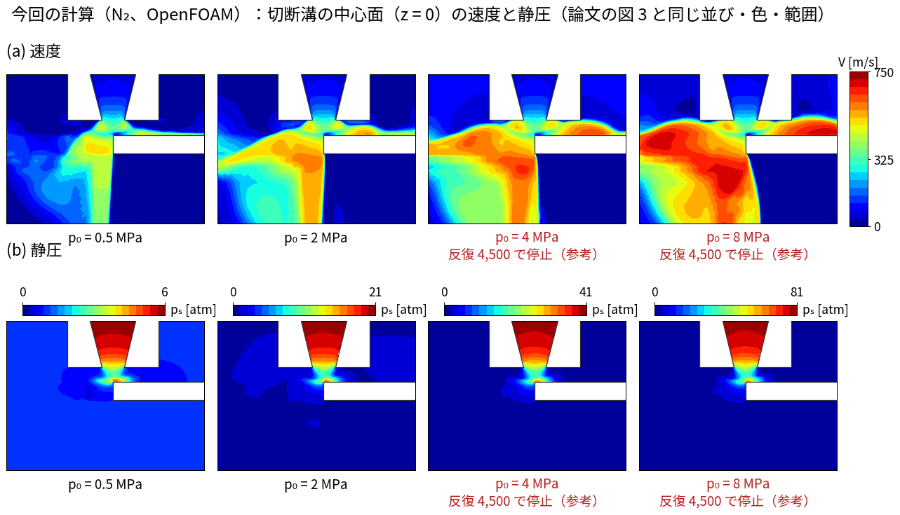

作成日：2026-11-04 OpenFOAM
v2512 ソルバ：reactingFoam（O₂/N₂ 混合ガス、LTS
疑似定常、transonic） 状態：0.5・2.0 MPa
は計算が終わり、論文と比べた（5.6、2026-11-05）。4.0・8.0 MPa
は計算が途中で止まり、見直し中。5.1〜5.4 は 1 回目（板の下 2 mm
の領域）の結果のため参考値
参考文献（refs/）
04_JSME2017_S0520603_…pdf：松村・木綿・山口「レーザ切断溝内のアシストガスの流動解析」機械学会
2017 年次大会 （3 次元・定常・圧縮性、空気、realizable k-ε、p₀ =
0.5〜8.0 MPa、De = 1.5 mm、H = 1.0 mm、板厚 1.2 mm）run002・003（軸対称、溝を丸い穴で近似）と違い、実際の切断に近い形で解く。


| 項目 | 値 |
|---|---|
| 解析領域 | x −4〜4 mm、y −3.2〜4 mm、z 0〜4 mm（溝の中心面 z = 0 で左右対称、半分だけ解く） |
| ノズル | 先細ノズル。出口径 De = 1.5 mm、入口側の内径 3.0 mm、絞りの長さ 3.0 mm、外径 6 mm |
| スタンドオフ | H = 1.0 mm |
| 鋼板 | 板厚 1.2 mm |
| 切断溝 | 幅 0.3 mm、x < 0（切断済み）。切断の最前面は x = 0 の垂直な平面（実際は曲がって傾いている） |
| メッシュ | snappyHexMesh。外側 0.25 mm、ノズル・噴流 0.0625 mm、溝の中 0.031 mm（溝の半幅に約 5 セル）。169,773 セル |
メッシュの課題：ノズルの内側の円すい面が階段状のまま（snappyHexMesh の面合わせが効いていない）。 出口の径は合っているが、ノズルの中の壁がでこぼこ。次の版で直す（ノズル部だけ blockMesh の構造格子にする、など）。
| 項目 | 設定 |
|---|---|
| ソルバ | reactingFoam（化学反応なし）。O₂ と N₂ の 2
成分を解く混合ガス |
| 時間 | localEuler（局所時間刻み）で疑似定常。4,000 回（8 MPa
は 6,000 回） |
| 圧力方程式 | transonic yes（チョーク・衝撃波に対応） |
| 乱流 | realizable k-ε（論文と同じ） |
| 物性 | 比熱一定の理想気体（O₂：分子量 32.0、cp 918、N₂：28.0、1040） |
| 入口 | N₂ 100 %、全圧 p₀（ゲージ圧 0.5／2.0／4.0／8.0 MPa）、全温 300 K。最初の 500 回（8 MPa は 2,000 回）で 1 気圧から p₀ まで上げる |
| 周り（上・横・下の境界） | 大気圧 101,325 Pa、300 K、空気（質量割合 O₂ 0.233、N₂ 0.767） |
| ノズル・鋼板 | すべりなし、断熱 |
| 見る量 | マッハ数・速度・静圧（論文の図 3 と同じ断面）、溝の中の O₂ 濃度（空気の巻き込み）、溝の壁のせん断応力、溝を抜ける質量流量 |
基礎式とソースコードの対応は
03_ソースコードで読む基礎式とlocalEuler.md。
| ケース | 1 回あたり | 予定回数 | 見込み |
|---|---|---|---|
| 0.5／2.0／4.0 MPa | 約 4.4 s | 4,000 | 約 5 時間 |
| 8.0 MPa | 約 4.4 s | 6,000 | 約 7〜8 時間 |
8.0 MPa は最初の設定（500 回で昇圧、maxCo 0.2）で発散したため、2,000 回で昇圧・maxCo 0.1 に変えてやり直した。 ほかのケースも、昇圧の途中で温度が一時的に 420〜440 K まで上がっている（全温 300 K なので本来はほぼ超えない）。 落ち着くかどうかを結果で確かめる。

rDeltaTSmoothingCoeff 0.02）のため、その小さな刻みが周りに広がり、ほとんど進まなくなった。_old_run004_v2/ に残してある。
| 0.5 MPa | 1 回目（板の下 2 mm） | 2 回目（板の下 10 mm） |
|---|---|---|
| 切断の最前面の平均せん断応力 | 511 Pa | 504 Pa |
| 溝を通る質量流量 | 0.40 g/s | 0.41 g/s |
→ 0.5 MPa では領域の大きさの影響はほとんどない（差 2 % 以内）。


tools/render_kerf3d_result.py
（白：ノズルと、まだ切っていない鋼板 x > 0。x < 0 は切断溝の中なので流体）

| 量 | 0.5 MPa | 2.0 MPa | 論文（原点の速度） |
|---|---|---|---|
| 板の上面（y = 0）付近の速度 | 約 230 m/s | 約 290 m/s | 約 260 m/s（0.5 MPa）、約 310 m/s（1 MPa 以上） |
| 溝の出口（板の下面）の速度 | 約 450 m/s | 約 650 m/s | — |
| 溝の中の O₂ 濃度 | ほぼ 0 % | ほぼ 0 % | — |
XOFF で設定できる）。| 0.5 MPa | 2.0 MPa | |
|---|---|---|
| ノズルから出る N₂ | 2.68 g/s | 10.3 g/s |
| 一次元のチョーク流の理論値 | 2.48 g/s | 8.7 g/s |
計算のほうが 8〜19 % 多い。ノズル内側のメッシュが階段状で、出口の実効的な面積が大きくなっているためと考えられる（2 章の課題）。
| 0.5 MPa | 2.0 MPa | |
|---|---|---|
| 切断の最前面（x = 0 の壁、溝の中）の平均せん断応力 τ | 511 Pa | 3,323 Pa |
| 板の上面から 1.1 mm 下の溝の断面を通る質量流量 ṁ | 0.40 g/s | 0.98 g/s |
| ノズルから出る全流量のうち溝を通る割合 | 15 % | 9.5 % |
tools/kerf_metrics.py1 回目は、圧力を上げる途中で温度が負になって止まった。 2 回目は 2.0
MPa
の結果を初期値にしたが、入口の圧力の設定（p0Coeffs）が
2.0 MPa の値のまま優先されていて、 実際には 2.0 MPa
のまま計算していた（流量が 2.0 MPa と同じで気づいた）。 3
回目（2026-11-04）は、その設定を消して 2.0 MPa の 4,000 回目から
4.0／8.0 MPa へ上げ直している。終わりしだい追記する。

論文の値は、論文の図 5・図 6 から目で読み取ったものです（目盛りの ±3 % 程度の読み取り誤差があります）。 原点は「板の上面で、切断溝の幅の中央」です（今回のモデルでは x = −0.15 mm、y = 0、z = 0）。
| 量 | p₀ = 0.5 MPa：論文 | 0.5 MPa：今回 | p₀ = 2.0 MPa：論文 | 2.0 MPa：今回 |
|---|---|---|---|---|
| 切断の最前面のせん断応力 τ | 1.1 kPa | 0.54 kPa | 2.8 kPa | 2.65 kPa |
| 原点の速度 V | 262 m/s | 272 m/s | 313 m/s | 297 m/s |
| 原点の静圧 pₛ（ゲージ） | 0.30 MPa | 0.23 MPa | 1.00 MPa | 0.93 MPa |
| 原点の動圧 pd | 0.14 MPa | 0.15 MPa | 0.68 MPa | 0.60 MPa |
| 原点の全圧 pₜ（ゲージ） | 0.44 MPa | 0.41 MPa | 1.68 MPa | 1.66 MPa |
python3 tools/compare_jsme2017.py out.png run004_kerf3D_N2_p0.5MPa run004_kerf3D_N2_p2.0MPa論文の図 3 と同じ並び・色・範囲で描いた、今回の計算の溝の中心面（z = 0）の速度と静圧です。下の図はすべて今回の計算の結果で、論文の図は入っていません。
論文の図 3（松村ら 2017、p. 3）と見比べてください。

| 見るところ | 論文 | 今回 | 判定 |
|---|---|---|---|
| ノズルを出た直後 | 不足膨張で加速。p₀ が高いほど出口の下の高速域が広がる | 同じ | 同じ |
| 板の上面・溝の入口 | 一度減速し、溝に入ると再び加速 | 同じ。溝の入口の角で静圧が最も高い | 同じ |
| 切断済みの側（左上）への流れ | 板の上面に沿って左へ。p₀ が高いほど速く広い | 同じ傾向。4・8 MPa では板の上に赤い高速の層ができる | ほぼ同じ |
| 溝の下に抜けた後 | 左下へ扇形に広がる。4・8 MPa では溝の下に赤い高速のかたまり | 切断の最前面に沿った縦の帯になり、横への広がりが小さい。高速のかたまりは板の上側に出る | 違う |
| 静圧 | ノズルの中と溝の入口の角だけ高く、ほかは大気圧 | 同じ | 同じ |
make_kerf3d_mix.py
の板の形）。python3 tools/compare_contour_jsme2017.py out.png run004_kerf3D_N2_p0.5MPa run004_kerf3D_N2_p2.0MPa run004_kerf3D_N2_p4.0MPa run004_kerf3D_N2_p8.0MPa
--paper page3.png で渡すと、論文の図 3
と今回を交互に並べた比較図ができる。docs/img_local/ に置いている。